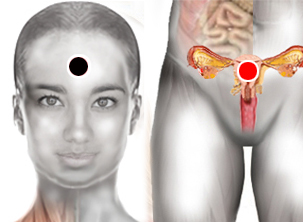

Menopausia
Pares
hipófisis - útero
timo - suprarrenales

Generalidades:
Menopausia: es el cese del periodo de ovulación y menstruación en la mujer que se da entre los 40 y 50 años de edad. Alrededor de la menopausia se da un periodo de ajuste del organismo conocido como Climaterio. Debido a los cambios hormonales (reducción de las hormonas sexuales, estrógenos) se pueden presentar diversos signos y síntomas:
Cambios fisiológicos:
Cambios emocionales:
Nota: Además de los pares ilustrados también pueden funcionar: hipófisis-suprarrenales, hipófisis-hipófisis, timo-timo, según reportan algunos biomagnetistas.